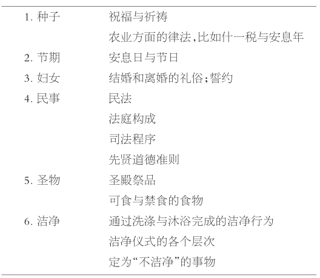

1985年6月24日，梵蒂冈与犹太人宗教关系委员会签发了一个文件，文件名太长，让人难以记住：“关于罗马天主教堂中布道解经时讲述犹太人和犹太教的正确方法的几点说明”。文件包含了这样一些记得住的词句：“我们必须提醒自己，以色列民族如何自始至终都伴随着持续不断的精神繁荣，无论是拉比时期、中世纪，还是现在，其源头在于我们一直与犹太教共享的同一个宗教遗产”；文件随后还引用了教皇约翰·保罗二世的话：“犹太民族到今天还在信奉和践行的宗教信仰和宗教生活，非常有益于我们更好地理解基督教生活的某些方面。”
终于，十九个世纪过后，真相才浮现出来。不仅仅是基督教会隐瞒了真相；“持续不断的精神繁荣”也常常被犹太历史学者掩盖起来，他们过于关注的是去表现犹太民族所遭受的苦难与牺牲，任凭有关受迫害的记载遮蔽历史的另一面，即犹太人的精神与知识创造力“无论是拉比时期、中世纪，还是现在”一直在延续。
值得注意的是，一个民族饱受困扰、迫害和流亡之苦，正常的生存之道频遭剥夺，无权接受至关重要的教育，他们竟然创造出如此充满生机的文化。下面的十一个人物故事都具体表现了犹太人生活中的某种精神价值、思想价值，或者社会价值。本书原本也可以选择其他犹太学者或者名人做例证，比如礼拜仪式创建人迦玛列二世，大诗人、哲学家耶胡达·哈列维，或者哈姆林的格吕克尔——她写下的意第绪文日志流露出一个17世纪的母亲对精神生活的密切关注。还可以有上百个其他的选择。这些选择都是随意的。
如果说有什么人在拉比犹太教的形成期代表了犹太教的话，这个人就是犹大。他是公元200年前后犹太社群的纳西（意为“首领”）或主教。他的门徒对他非常敬重，从来不提他的名字，只说“拉比”（意为“老师”），或者“我们神圣的拉比”；圣洁、谦卑以及畏惧犯罪，这是附在他身上的美德。“拉比死后，谦卑和畏惧犯罪之心便不再有了”，这是他的门徒希亚拉比写下的哀歌。
他不是与世隔绝的圣人，而是一个卓越的宗教领袖和政治领袖。他一生大部分时间是在加利利度过的，并在此地的拜特舍阿里姆和西弗里斯建立了多所神学院；去以色列的游客可以在这两个镇子里见到犹太会堂的遗迹和残留下来的马赛克图案，还可以见到一些墓，据称犹大拉比及其同仁埋葬于此。
他出生前的那几十年，罗马帝国的犹大省哀鸿遍野。公元70年，罗马人平定第一次叛乱，毁掉了耶路撒冷圣殿；135年——犹大大约生于这一年，罗马皇帝哈德良最终平定了第二次（巴尔·柯赫巴）叛乱，大量犹太人丧命，迫害也紧随其后。
犹大身膺犹太行省主教以前，罗马安东尼王朝的皇帝马可·奥勒留执政，犹太人与罗马帝国的紧张关系已经和缓。犹大是个热爱和平的人，显然能对罗马文化处之泰然，他尽己所能，巩固与占领国的关系。《塔木德》中有不少轶事，记述了“拉比与安东尼”之间亲切友好的关系；其中，公元175年，皇帝马可·奥勒留到访巴勒斯坦，公元200年，皇帝塞普提米乌斯·塞维鲁斯到访巴勒斯坦，此类会面的记载应该是有一定历史基础的。
事实上，“拉比与安东尼交谈”之类的传说表明犹太人与罗马帝国之间关系不浅。马可·奥勒留所倾心的斯多葛派哲学既影响了犹太教的道德规范，也影响了基督教的道德规范。而且，盖乌斯和乌尔比安正在为《罗马法》的系统化打基础，犹大拉比的伟大事业，即创造一部综合的《犹太律典》，也在此时开始构思，这绝非巧合。
在犹大拉比的指导下创造的律典叫做《密西拿》（意为“训诲”，或“重述”），它完善了《圣经》，成为拉比犹太教的基础文件。共有六卷，是对犹太教教义最早的系统阐述；它远不止是一部律典，因为它既包含价值标准也包含法律条款，既有伦理规范也有宗教规范；它关注敬神活动和洁净礼，同样也关注民事、刑事裁决和个人状况。这部律典不久便被奉为圭臬，成为编写《塔木德》的基础（见表3.1）。
关于犹大拉比的个人生活，有许许多多的传说。有一则广为人知的讲的是他关心动物。有头小牛要被屠宰了，它跑去求拉比，一头扎进拉比的长袍里悲鸣不已。拉比对小牛说，“走吧！上帝创造你，这就是你的命！”拉比对小牛没有慈爱之心，上天因此降苦难在他身上。一天，拉比的管家正在打扫房间，发现几只黄鼠狼幼崽，就把它们扔出来，扫走；拉比说，“放开它们！经上不是写着‘祂的慈悲，覆庇祂一切所造的’？”（《诗篇》，145：9）上天垂命，“因为他是仁慈的，我们也要对他仁慈”。
表3.1《密西拿》律典的六卷章程

［斯泰梅姆（Stamaim）的发音像是“stammer”（口吃）与“im”连读，重音落在“im”这个希伯来语阳性名词的复数词尾上。］斯泰梅姆不是成为传奇主人公的某个圣人的名字，也根本不是任何人的名字。这个词的意思是“无名的人士”，现在的学者用以指编辑《塔木德》经文的那群人（我们不知道这些人是谁，但相当确定其中没有女人），他们在公元6世纪前后生活于巴比伦王国。
我们先跳到故事前面，因为斯泰梅姆之前还有其他三个团体，名称的词尾都是“im”，重音也在最后一个音节，所有成员的名字我们确实 知道。塔奈姆成员的名字记录在《密西拿》中，都是犹太拉比，由犹大主教本人任命，为同代人所熟知。随之而产生的一个群体叫阿摩莱姆，他们讨论塔奈姆成员的观点，调和明显的矛盾，平息纷争，推广律法，将律法应用于新的环境中。随后的另一个团体叫塞伯莱姆，他们针对前辈们的主张质询了许许多多的“为什么”以及“基本概念是什么”之类的问题——提出这些问题是为了更好地理解，而不是挑战，因为他们非常尊重前辈拉比，不敢对前辈们定下的规则持异议。阿摩莱姆与塞伯莱姆的讨论已经记录下来，有选择地编录进《塔木德》中，后来被称做《革马拉》（意为“学习”、“补充完成”），这部经论用阿拉米语写成，形式上是对《密西拿》的评注。
《塔木德》=《密西拿》+《革马拉》
《塔木德》有两种：
·《以色列塔木德》（也叫“巴勒斯坦塔木德”，或“耶路撒冷塔木德”），完成于公元450年。
·《巴比伦塔木德》，约于公元550年完成。比耶路撒冷塔木德更丰富，被认为更有权威。
现在，“塔木德”一词通常用做《密西拿》和《革马拉》的总称。《塔木德》是犹太教真正的中心。《圣经》之后，这部书成为犹太人最常研读的经书，解读《圣经》也以它为参照。尽管此书举足轻重，而且书中记录了数百个（塔奈姆、阿摩莱姆和塞伯莱姆成员的）名字，我们还是无从得知，这部书到底是谁汇总、编辑而成的。编者们讲述轶闻趣事，决定增删，也精通如何运用戏剧化的文学结构讲解深奥晦涩的律法辩论，以吸引研究者的注意力；他们收集能抓住想象力的传说和言论，往往显示出道德和精神方面的高度洞察力，尽管偶尔也会流露出那个时代的偏见；但他们没在任何文件上署名。也许，他们以为，自己只不过是重复了前辈大师的言论而已；如果说他们自己有独特的建树，这种想法真的会让他们吃惊。
每代人中都有这样一些默默无闻的人物，他们是不具名姓的学者、谦卑的实践者，他们整理那些先行的富有智慧的“留名者”不甚完备的启发性言论，并切实履行这些思想。
公元7世纪末叶，北非的许多部落都已皈依了犹太教或基督教，此时，伊斯兰教却从阿拉伯半岛广泛传播出来。无疑，有些人心甘情愿地接受了伊斯兰教，其他人则反对入侵的阿拉伯军队和他们的新宗教。
在今阿尔及利亚的东南部曾有一个强大的柏柏尔人部落——杰拉瓦，该部落已经皈依了犹太教。以卡西珊为首的杰拉瓦部落大败哈桑·伊本·阿尔·努曼的阿拉伯军队，扼制了阿拉伯入侵非洲的势头，阻止它进一步入侵西班牙。然而，卡西珊后来被出卖，在公元700年前后的战役中遇害。
这位令人胆颤心惊的柏柏尔人公主信仰的是哪一个犹太教派，她是不是真的犹太教徒？这些根本不可能说清楚。而有关她的故事，几经阿拉伯编年史作者反复渲染，引起了一个重要的历史假设。如果她巩固了反抗哈桑的胜利成果，穿越北非进逼阿拉伯半岛，或者向北进入西班牙，结局会怎么样呢？欧洲和近东还会分裂成相互敌对的基督教和伊斯兰帝国吗？或者说，我们的历史会不会改写呢？
不管历史假设的结果是什么，事实是，部分由于卡西珊的覆没，最终形成两个争战不休的“大国”，犹太教徒在它们的版图上式微，落入依附从属的状态。
公元635年，多个阿拉伯部落发动起义，摧毁了位于今天伊拉克的萨珊帝国，带来伊斯兰教这一新的宗教。此前，《巴比伦塔木德》已经成书，其内容在幼发拉底河沿岸苏拉城和蓬贝迪塔城的大神学院中被研读。这些互为对手的神学院，像是犹太教设在巴比伦的牛津大学与剑桥大学，每所的首脑都是一位头衔叫“加昂”（意为“德高望重”）的拉比，其职责既包括执掌律法，也包括精神督导和经义讲授。这个自治社区的中心人物是“流亡人领袖”，他自称是大卫王的后裔，负责处理犹太人与哈里发辖地之间的关系。
在巴格达阿拔斯王朝（750—1258）诸哈里发的统治下，犹太人曾兴盛一时。数位加昂（Geonim，注意又带有希伯来语中表示阳性复数的“im”）奉召回答各地犹太人的问题，当时的犹太人已遍布从法国普罗旺斯到也门的广大区域。加昂们的解答往往被抄写保存起来；按照犹太教徒的习惯，这种来往书信最终要收入“格尼匝”，即藏经馆。一个世纪之前，开罗藏经馆的大部分藏品被运到英国剑桥的大学图书馆；若有机会，诸君应去那里参观这一稀世藏品展，或听一次相关的讲座。
萨阿迪亚·本·约瑟生于上埃及法尤姆地区（这就是他叫阿尔-法尤米的原因）的一个叫做迪拉兹的村子里。公元905年前后，他离开埃及，在巴勒斯坦、阿勒颇（叙利亚）和巴格达等城市之间游荡了几年。公元928年，尽管身为外国人，他还是被任命为苏拉神学院的加昂。他获得了哲学家、科学家、犹太法典专家、作家、解经家、文法学者、翻译家、教育家和宗教领袖等声名，而且，实际上在每个领域的声望都是无可争辩的。
萨阿迪亚在被免职入狱的那几年写下了伟大的哲学经典《信仰之书》，入狱原因在于，“流亡人领袖”大卫·本·扎卡伊命令他签署一份文件，而他认为文件内容不公正，拒绝签署。萨阿迪亚熟谙伊斯兰教神学与亚里士多德派哲学，信奉理性至上，这理性中就包括道德感。他之所以笃信上帝的道与启示合乎理性，不是因为上帝确定 了理性和正义，而是因为上帝一方面举止随心所欲，一方面又表明祂的一切都符合理性与正义的绝对标准。换句话说，上帝行理性或正义之事，此事先天就是理性的或者正义的；并不因为 是上帝做的，才是理性的或者正义的。
萨阿迪亚的认识论源自对理性至上的强调。我们通过感官体验、通过由感官体验得出的逻辑推理，或者通过自身就是一种“合理性”形式的天赋道德观，来获得各种知识。比如，某人声称上帝派他来让我们去偷盗或去通奸，派他告诉我们律法不再适用，或者某人用一些明显表演出来的神迹来支持他所谓的预言，那么，我们如何知道这些东西根本不可信呢？因为理性告诉我们行事要合乎道德规范，真理更可取，谬误不足道。
《托拉》本身完全符合理性。萨阿迪亚将圣诫分为“理性的”和“听说的”，即通过理性得知的和主要通过启示而获知的。即便不是所有的圣诫都具有明显的理性，我们也可以对比较模糊的圣诫作出“基于事实经验的猜测”。如果《托拉》完全符合理性，上帝为什么还要派信使（先知）向我们传达呢？启示是上帝怜悯世人的特殊行为，《托拉》里的知识应该清晰明了，应该让所有人都能获取，包括那些缺乏哲学思辨能力或没有时间通读《托拉》的人。
萨阿迪亚熟悉其他教派和宗教的著述。除了驳斥过伊斯兰教、基督教和“二神论”宗教，他还驳斥过圣经派（一个拒斥拉比传统的犹太教派）；他的辩词旁征博引，有理有据。
他编辑过希伯来祈祷书，也写过一些希伯来文的祭拜诗，但他主要是用阿拉伯文写作。他是一个杰出的圣经学者，写过大量的圣经评注；他用阿拉伯文翻译的《圣经》，至今仍在沿用。
名字的含义是什么？
许多名人的希伯来文姓名并不是真名，而是由头衔和名字的起首辅音字母组成的缩写。
因此，Rabbi Shlomo Itzchaki（意为“艾萨克的儿子所罗门”，音译为施罗摩·伊兹查奇拉比）这个人更为人所知的名字是R ashi（赖施）；R abbi M oses b en M aimon（摩西·本·迈蒙拉比，亦称迈蒙尼德），其广为人知的名字是R amb am （兰巴姆）。
今天，在德国西部莱茵河畔的沃尔姆斯，你可以参观赖施的犹太会堂（被纳粹分子毁坏后重建），看看他坐的椅子，到为纪念他而设立的博物馆里探个究竟。你会感觉到他的宽厚、慈父般的仁爱，感觉到他在引导你。对于一代代的犹太人而言，这是一种熟悉的感觉。通过他的经书评注，一代代犹太人被引入《圣经》和《塔木德》的秘奥之中。赖施是一个杰出的《塔木德》评注家，是特指的那个 评注家。预见到读者的问题，并给予简明清楚的解释，他在这方面有天赋，能让你感觉他似乎与你同处一室，通过解释经文坚决而又温和地督导你远离谬误。
多数孩子通过他对《摩西五经》通俗易懂的希伯来语评注了解了他，也了解了《圣经》和希伯来语。也许，持久的吸引力来自他独树一帜的风格，他从《塔木德》和《米德拉西》中选取内容，用这种无从模仿的风格布道、讲述传说、解释上帝的圣诫。然而，对于学者而言，赖施则是一个圣经体语言的大师。他披阅一代代前辈语法学家、辞典编纂家的作品，明确地区分了“《圣经》实际上是怎么说的”（peshat，即“明确含意”）和“什么是传统上读解《圣经》时附加进去的”（derash，即“布道词”）。读赖施的书会感到言辞朴实亲切，即那种真有一个老师在身边的感觉，这就是他将艰涩的术语译成古法语时的风格，读来几乎像听他与周围人说话一样。
《〈摩西五经〉评注》是最早出版的注明时间的希伯来文书籍（雷焦出版社，1475年），后来又引发二百多种此书的注解本。这本书多次被译为拉丁文。赖施的圣经评注对尼古拉斯·德吕拉影响巨大，又通过他，影响了马丁·路德和其他基督教希伯来文化学者，进而影响了宗教改革运动。
赖施曾在沃尔姆斯学习，但他的家乡在香槟省（今法国东北部地区）首府特鲁瓦。后来，他没有靠担任拉比，而是靠种葡萄维生；如果他想过在葡萄酒中注入气泡，那么，他肯定会是第一个酿出真正香槟酒的人！
他生活的细节鲜为人知。他有三个女儿，其中两个叫米丽亚姆和约舍芙德，分别嫁给了他的两个学生。另一个女儿的名字不得而知。大约在1070年，他创立了一所学校，招到很多学生，经过一段时间的发展，在他的女婿和外孙们的管理下，这所学校成为德系犹太人首屈一指的律法书研修学院。
由于第一次十字军东征（1095/1096），赖施落得晚景凄凉，很多亲戚朋友都死于战火。他当时创作的忏悔诗表现出悲凉的精神状态和对上帝温柔缠绵的爱；其中一些诗篇保留在礼拜仪式之中。
他是大卫王的后裔、曾经遍游四方、曾与迈蒙尼德（1138年才出生！）会晤——这些都是传说，无从稽考。有一个传言，说他父亲有一块珍贵的宝石，基督教徒本来想据为己有、装饰到一座宗教雕像上，他父亲却把宝石抛入大海，随后，一个神秘的声音宣称，他父亲将生一个博学的儿子。另一则故事说，他母亲怀孕时在沃尔姆斯一条狭窄的街道上遇到生命危险，墙上突然神奇地打开一个壁龛（现在还是一个旅游景点呢），把她藏了起来。甚至还有一则故事说，在布永的戈弗雷东征前，赖施曾向他预言，他将统治耶路撒冷三天，然后仅带三匹马败归法兰西。
伊本·埃兹拉生于托莱多，是一位杰出的诗人、文法学家、医生、哲学家、占星家和圣经评注学者。《摩西五经》的作者一般被认为是摩西，出于批判的天性，埃兹拉暗示《摩西五经》的作者身份尚有疑问；六百年之后，斯宾诺莎重拾了这个暗示，从而导致“圣经现代批评”的诞生。伊本·埃兹拉虽说确实是个占星家，却是那个时代少数不信魔鬼的人之一。
1140年，伊本·埃兹拉离开西班牙，游历了意大利、北非和近东，还到过西欧，包括法国和英国。在伦敦，他创作了主要的哲学论著《敬畏上帝的基础》，书中阐述了新柏拉图派哲学观，这种观点在他的圣经评注中有突出体现。其圣经评注风格简约、富于激辩，一直很受欢迎，对文艺复兴时期基督教希伯来文化研究的影响仅次于赖施。
伊本·埃兹拉与众位学者结下友谊，赢得了他们的尊重，但其个人生活却令人叹惜——一方面因为“逃离”西班牙，另一方面因为他有四个孩子去世，唯一在世的儿子又曾短暂地改信伊斯兰教。他的幽默感有些苦涩；在一首警言诗中，他哀叹道：
“伟大的雄鹰”是后世充满钦佩之情地谈到他时所用的词。摩西·迈蒙尼德生于科尔瓦多，这座城市位于崇信伊斯兰教的安达卢西亚地区。近代以来，关于他的记忆成了这一地区骄傲的资本和旅游收入的来源。在犹太教领域内，人们所熟知的是兰巴姆，即他名字的起首字母组成的缩写（见第33页的文本框）。
1148年，科尔瓦多被阿尔摩哈人占领，占领者不仅压制异于其严肃道德观的其他伊斯兰教派，还毁坏犹太教会堂，责令犹太人背叛犹太教，不背叛就只有死路一条。迈蒙家族逃到菲斯（今属摩洛哥的一个城市），生活了几年；兰巴姆的《叛教书》大约成书于1160年，书中细腻地表达出他对那些胁迫之下表面上遵从伊斯兰教的人深深的同情与宽容。1165年，迈蒙家族想定居十字军统治下的巴勒斯坦而未果，随后，在埃及安顿下来，先是在亚历山大港，最终迁至富斯塔特，那是古代开罗的一部分，在萨拉丁苏丹的新阿尤布王朝统治之下。
兰巴姆一心扑在神学研究和写作上。到1170年代，开罗犹太人认为他就是纳吉德（领袖）；至于他是否还担任官方的正式职务，就无从得知了。他的兄弟大卫从商供养整个家庭，后来葬身海上，摩西随即转而行医，做萨拉丁的大臣阿尔法德尔的私人医生，挣钱养家糊口。他的忠告与见解传播到整个犹太人世界，北到法国的普罗旺斯，南到也门、到巴格达。他的许多书信都保留下来，有的收入开罗藏经馆（见前文第31页）。公元1204年12月13日，他在富斯塔特去世，穆斯林和犹太人都为他的去世哀恸不已。他被葬于太巴列（位于巴勒斯坦）。
他用希伯来文写的《密西拿托拉》是对犹太教律法的系统摘录，其中不仅包括宗教仪式和礼拜事宜、民事和刑事法典，还包含以色列地区的农事原则、圣殿修建与流程以及洁净礼仪方面的规范。本书最显著的特征在于，作者是依据自己的道德信念和哲学感悟来解释《塔木德》中的口述部分哈拉卡的。比如，他阐述敬爱上帝这条圣诫时，就说敬爱上帝也包括奉召参与自然科学研究，理解上帝创世的神迹；其中有关宇宙学和医学的短篇，即便在今天也会被当做科普杰作。他拒绝接受拉比律法，认为那种东西是基于迷信，或者说，是基于崇信魔鬼和巫术。这个看法在他对占星术的排斥中表达得尤为直率。
他的哲学杰作是犹太——阿拉伯文化相结合的《迷途指津》。和前辈萨阿迪亚一样，或者说，和使他获益良多的穆斯林哲学家阿尔法拉比和阿维森纳一样，他将宗教传统和哲学协调起来，于他而言，首先是要与亚里士多德的哲学观相协调。《迷途指津》一书，不仅仅影响了犹太教思想，其拉丁文译本还影响了诸如托马斯·阿奎那这样的基督教神学家。这本书甚至在作者那个时代就已引起了传统势力的激烈论争。直至今日，尊他的《密西拿托拉》为哈拉卡著述巅峰之作的正统派犹太教，仍对《迷途指津》一书中的许多教义感到困惑；他们要么置之不理，要么把本书当成神秘主义论著来解读，这种做法兰巴姆如果知晓，定会感到吃惊。
迈蒙尼德是最早想构建犹太教义的学者之一，也许是因为面对伊斯兰教时需要划清界线，并且基督教徒又总想劝化犹太人。他写的“信仰原则十三条”在他早期的《〈密西拿〉评注》中就已详细论述，现列入本书的附录A中。
1280年，犹太教新年前不久，亚伯拉罕·阿布拉菲亚在一个“声音”的激励下，前往罗马劝说教皇尼古拉斯三世改宗犹太教。一怒之下，尼古拉斯三世下令在火刑柱上烧死他。阿布拉菲亚看上去镇定自若，动身去了苏里阿诺，8月22日他收到消息说，前一天夜里教皇中风死了。回到罗马，他被关了一个月，随后就获释了。
在公元13世纪，是什么样的犹太人竟然把教皇当成规劝改宗的对象？也许只有把自己当成先知的人才会如此。阿布拉菲亚出生于西班牙的萨拉戈萨，生活忙忙碌碌——有人也许会说，是活得乱七八糟。十八岁那年，他游历到了巴勒斯坦的阿卡，满怀希望去寻找传说中的塞巴提昂河。据说，这条河每天都是浪涛翻滚，咆哮不止，只在安息日风平浪静。他没找到，别人也没找到。于是，他便开始细致地研读学问，先是迈蒙尼德的哲学（太理性了），接着又读犹太神秘哲学，这更符合他的趣味。三十多岁回到西班牙后，他多次见到异象，于是加强神秘哲学的学习和思索，并且断定，熟知圣名和宗教仪式、加强苦修是成为先知的关键。后来他再次离开西班牙，1279年在希腊的帕特雷写下第一本预言书。他称自己的方法为“先知神秘哲学”，看不起作为“一般”神秘哲学的十个塞非洛特（神性的体现），认为后者只不过是初级的、次等的知识，沉思特征盖过了实际效用。
不出意料，他走到哪里就在哪里制造混乱。在西西里，他以先知和弥赛亚的身份出现，这是从一封措辞严厉的书信中读到的事实，发信人是巴塞罗那的所罗门·本·阿德雷拉比，写给指责他的巴勒莫人。由于本·阿德雷和其他人的攻讦，阿布拉菲亚传扬的狂热神秘哲学1280年之后在西班牙销声匿迹，却在伊斯兰教盛行的地区被接受，在那里，它与伊斯兰教苏非派神秘主义和谐共存。阿布拉菲亚几乎被人遗忘了，只是，目前还有些学者正在从欧洲图书馆收藏的未刊手稿中拼凑他的哲学原貌。
现代人要比他的同代人以及紧随其后的一代人更喜欢他，也许是因为现代人不需要容忍他的过激行为。“他的异象面前矗立的是信仰统一的理想，他努力想实现的正是这一理想。”他面对的不是普通的民众，而是犹太教徒和基督教徒中已经受到启蒙者。他的一个概念，即超越教义差别的以神秘方式达到的本质上的统一，鲜见于前现代犹太教中，尽管在当今很有吸引力。研究犹太神秘哲学的现代学者，已经接受了阿布拉菲亚对于这个主题的划分。“神智学-神力”——比如出自十个塞非洛特的——以上帝为中心，包括两个方面：在理论上理解神，以及将和谐引入神域本身。阿布拉菲亚本人是狂热犹太神秘哲学的主要倡导者，这种哲学以人为中心；它从个体的神秘体验中发现了终极价值，但不关心这个发现对神性的内在和谐性所起的作用。
1391年圣灰星期三 [2] ，塞维利亚爆发了一起针对犹太人的暴力事件。许多犹太人被杀，其他人被迫接受洗礼。西班牙犹太民族的黄金时代开始式微，压迫、残害和驱逐就此展开。
1391年以降，一些迫于无奈而改宗的犹太人开始接受基督教。还有一些人偷偷地崇信犹太教。很多人在基督教内升至高位，比如主教与红衣主教。这些改变信仰的人被称做“新基督教徒”（还有人在用“马拉诺”这个词，它在卡斯蒂利亚语中本义为“猪”；这个称呼应该避免）；本来专为排查基督教异端而设的宗教裁判所，受邀来核定他们的信仰是否真诚。遭到告发很容易，事实也往往如此；酷刑之下，不仅要求忏悔，还会提出进一步的指控，而定罪的结果往往是火刑烧死。（教会仍然自称从未在火刑柱上烧死过任何人。这是事实。教会以酷刑折磨受害者，往往还是在公开场合，随后移交给世俗政权机构绞死、烧死。）
在哥伦布（此人可能是个身份隐秘的犹太人，他那气势恢宏的航行肯定得益于犹太人的科学成就、受惠于犹太人的财富支持）扬帆远航寻找“印度”之前，被逐出西班牙的犹太人早就开始了行程更短但危险更甚的航海活动。西班牙国王费迪南与王后伊莎贝拉不理会他们的犹太大臣、伟大的唐伊萨克·阿布拉瓦内尔（在圣经评注中，他形象地描述过此事）雄辩的恳求，把犹太人驱逐出西班牙。有些犹太人受到葡萄牙人的欢迎，但几年之后，在严峻的形势下又遭驱逐；他们的子女被夺走，被迫接受洗礼。
1536年，一纸教皇通谕命令宗教裁判所进驻葡萄牙。当时还有些人逃往气氛稍为缓和的安特卫普。这些人中有一位富有的年轻寡妇，名叫比阿特丽斯·德卢纳，她的丈夫迪奥戈·弗朗西斯科做香料生意，积聚了大笔财产。像其他“新基督教徒”一样，她的目的地是土耳其，但当时她根本不被允许去非基督教国家。如果公开表明意图，就等于直接说自己信犹太教，甚至在安特卫普也会遭告发，受火刑，所有家庭财产充公。然而，她做起家族生意，与其他国家建立了联系，做力所能及之事，利用遍及欧洲（甚至包括土耳其在内）的可靠中间人，帮助其他人逃离葡萄牙和宗教裁判所的迫害，找到至少可以通往英国或尼德兰的途径，最终到达一个安全的避难地，可以在那里公开宣布自己真实的宗教信仰。
1544年底，比阿特丽斯移居威尼斯，仍伪称自己是基督教徒。由于家庭纠纷愈演愈烈，她的姐妹（后来成为一个忠诚的犹太教徒）举报她信仰犹太教，她遭到监禁；当时的奥斯曼帝国政府插手干预，而且此事危及了国家之间的稳定关系，这样，她才获释。最后，1550年在费拉拉，在埃斯特家族埃尔科莱二世公爵的庇佑下，比阿特丽斯才抛开伪装，改掉她的“马拉诺”名字比阿特丽斯·德卢纳，换成更具犹太色彩的名字“纳西家族的格拉西亚”（相当于汉娜）。人生的最后几年，她是在君士坦丁堡度过的，住在加拉塔的豪华住宅里，俯视着博斯普鲁斯海峡，接连不断地从伊比利亚半岛救出犹太人，照顾穷苦人。有人说，“每天她家的餐桌边都坐着八十个乞丐，口中念诵她的名字”。她还资助犹太学者、经书出版以及一些神学研修机构和犹太会堂；在费拉拉，她冒险资助出版过希伯来文和西班牙文的费拉拉版《圣经》，对于其他事也有资助。
图4 约1553年，帕斯托里诺·德帕斯托里尼为纪念格拉西亚·纳西夫人而铸的勋章。
在《以色列流难告慰书》中，格拉西亚的同代人塞缪尔·乌斯奎用了整整一节的篇幅，专讲格拉西亚夫人组织西班牙犹太难民逃离。他的赞颂之词绝对恰如其分：
表相存在欺骗性。看看电视屏幕，看看纽约、伦敦、耶路撒冷街道上那些不打领带的犹太人，留着络腮胡子、长长的鬓角，戴着乌黑的帽子，穿着双排扣礼服，你很有理由认为他们代表了最保守、最传统的犹太教派别。但是，衣服本身应该透露的是，一切并不像表面上看起来的那样。摩西没这样打扮过，犹大主教、萨阿迪亚或赖施也不是这般打扮。这种衣服，就像哈西德派犹太传统乐队的音乐一样，即便出现在18世纪的乌克兰或波兰也没有什么不合时宜，那是哈西德教派真正的故乡。这个教派在其发源地被视做革命的民粹主义运动，威胁着已有的宗教秩序和传统。
巴尔·谢姆·托夫（贝施特）
“巴尔·谢姆”（希伯来文是“圣名之主”）的名号过去是给予信仰疗法医师的，人们认为这些人书写或念诵圣名，就会达到神奇的治疗效果。“托夫”的意思是“善”。巴尔·谢姆·托夫（Baal Shem Tov）的起首辅音字母可缩写为“贝施特”（BESHT）。
这场运动的奠基人是伊斯雷尔·本·埃利泽，通常人们更熟知他的另一个名字，即作为游医的巴尔·谢姆·托夫（见文本框）。他生于乌克兰的波多利亚，出生时父母年事已高，很小就成了孤儿，在贫困之中长大成人。小时候，他没表现出什么特别的天分，人们委托他接送孩子去犹太教会小学；甚至在那个阶段，他就时常走进喀尔巴阡山脉的丛林，在大自然中苦思。他结过婚，一度开过一家客栈勉强维持生计。
依照一本权威的圣徒传记《赞颂贝施特》中的说法，直到三十多岁时，他才向亲近的信徒表露自己是一个博学深思的学者，一个神秘主义者。身为具有人格魅力的医师，他吸引了广大的信众，激励人们崇拜上帝，纯朴而快乐地信守神的圣诫。他有一点非常像耶稣，即愿与妇人、淳朴的人交谈，明目张胆地漠视律法的繁文缛节，这让正统宗派心生反感。
由于像波兰缅济热奇的马吉德那样的游方传道士四方布道，这场运动遍及乌克兰和波兰，很快，哈西德派教徒就开始在犹太会堂里又跳又唱，甚至还喝酒，让权威人士甚为不安；他们还自拥“拉比”替代传统的拉比。他们的热情、人人平等的观念，还有对传统神学权威的漠视，吸引了大量的追随者。很快，哈西德教派有了自己的社团，每个社团都有一个世袭“拉比”或“义人”做首领，指导信众，演示神迹。早期的许多异端教派依然兴盛，它们与城镇名称连在一起，为世人所知，比如贝尔兹的哈西德教派、热尔的哈西德教派、布拉特斯拉法的哈西德教派；还有一些教派仍由“拉比”领导，其中“仪式派拉比”迈纳海姆·蒙德尔·施尼尔桑恩也许是近年来最有威望的了。
发展过程中，哈西德教派也针对米特纳盖德等对立派别提出的反对意见，调整了教义。哈西德教派的教士更加遵守律法，愈发致力于神学研究，许多拉比既是非常虔诚的信徒，也是知名的学者。与米特纳盖德教派不同，他们强调《塔木德》的重要地位，也同样强调犹太神秘哲学和神秘主义研究的重要性，推动神秘哲学的大众化；他们接受神的超验性，更强调神的无所不在。讲述故事是哈西德教派传道的一个重要手段；马丁·布贝尔将许多故事改写为德文（目前布贝尔的作品有英译本传世），让更广泛的公众理解了哈西德教派的意蕴。
哈西德教派赞同传统的弥赛亚教义，但也强调个人的救赎甚于民族的救赎。通常，这个教派致力于缓和（虽然从不放弃）对救世主的渴望；后期仪式派拉比的追随者宣称，仪式派拉比本人就是弥赛亚——这个观点更多地要归因于基督教福音派，而非哈西德教派。
伊斯雷尔·巴尔·谢姆·托夫与摩西·门德尔松这两个同代人之间对比强烈，这在犹太世界里是很少见的。他们观点对立，却同样对犹太教后来的发展有着深远的影响。
门德尔松生于德绍，后迁居至柏林。在柏林，他私下自学了数学、哲学以及多种语言；那个时代，犹太人不许上大学。他只得在一个富裕的犹太丝绸商人家里当家庭教师维持生计。最终，他与年轻的德国自由主义戏剧家、批评家戈特霍尔德·埃弗拉伊姆·莱辛结为朋友；人们认为莱辛笔下的智者纳旦就是以门德尔松为原型的。门德尔松人生这段时期的巅峰是在1764年，他撰文讨论形而上学与科学方法之间的关系，获得柏林学会的最佳论文奖；他的竞争对手中竟有伊曼纽尔·康德！门德尔松1767年创作对话录《斐多》，讨论灵魂不朽问题，此书为他赢得了“德国苏格拉底”的称号。
1769年，瑞士教会执事约翰·卡斯帕·拉瓦特尔致信挑衅门德尔松，要他或者与基督教辩论，或者“以理性和正直行事”，改宗基督教。门德尔松勇敢而不失尊严地予以回应，坚守自己的犹太教信仰，甚至声称犹太教优于基督教，因为犹太教从根本上比基督教更宽容。他写道：
门德尔松热情洋溢地支持犹太人拥有公民权，率先公开指责犹太种族隔离主义。他强烈敦促他的犹太同胞在宗教信仰许可的范围内融入德国的文化和社会之中，说标准德语，少说意第绪语。他用希伯来语字母将《圣经》内容译成德文，并写下希伯来文评注，这部作品的传播远及英国，得到热情传诵；一些因循守旧的人虽然未革除他的教籍，却对此书深表不满。1781年，他支持在柏林建立了犹太自由学校，不仅讲授传统的《塔木德》和《圣经》，还讲授世俗科目、法语和德语。
在哲学著作《耶路撒冷》中，他支持政教完全分离；既反对教会拥有财产，又反对基督教会和犹太会堂行使革除教籍的权力。他强烈反对泛神论，然而，他自己的“自然和理性的”宗教信仰就接近于自然神论。门德尔松与很多同时代基督教徒一样，疏于系统地阐述教义；甚至，他虽然没有明确表示对《圣经》源自于神这一点的怀疑，但对他来说，《圣经》就是“天启的立法”，不受教条的束缚。“犹太教的精神就在于信守教义无违自由，行为自由无违律法。”他坚称。
这样的观念远离犹太宗教传统的主流，却使人得以在接纳启蒙运动中发现的价值观的同时，深入理解自己的信仰。不仅改革派犹太教，就连现代正统派犹太教都大量采用了门德尔松的开创之举，即把传统和现代性结合起来。